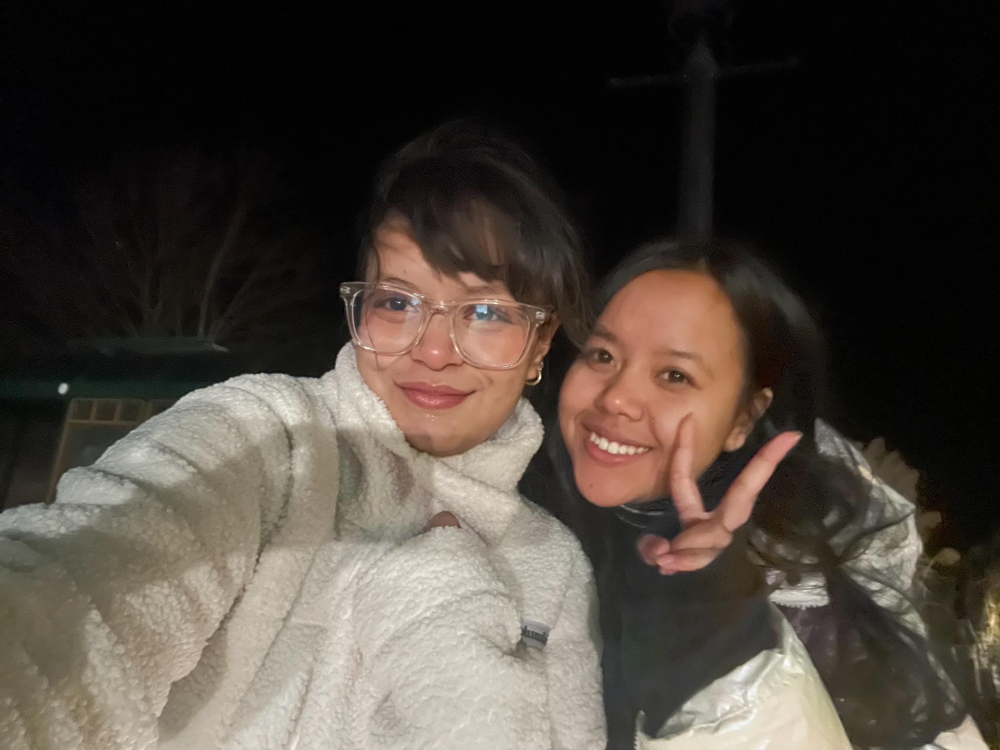

As the winter break began, I had the chance to leave Cougar Village and explore more of the United States rather than spending my time in the dorm being bored. After 7 years of separation, I finally had the chance to visit my older sister and my uncle. Then I started my journey on the 17th of December 2022.

My first stop was in Detroit, then Boston, and then I had to take a ferry to Massachusetts. It might seem enjoyable on the surface, but I felt completely lost the entire day. I had to run from one gate to the next to make it to my flights, and if I hadn't made it on time, I would have been stuck there forever.
Even though the travel to Massachusetts only took 8 hours in total, it seemed like I had been on airplanes for days. Finally, I made it to Massachusetts. As I walked off the ferry, I saw my sister waiting for me; I ran and hugged her tightly, pleased that I was done for the day. (picwithmysister.jpg) My sister was so excited that she woke me up early the other days, saying we were going out for lunch, and she'd take me to see the ocean. Despite not being fully recovered from my lengthy trip, I went out with her since she was very happy to see me after so long. (seashore.jpg) The entire nine days I spent with her were the best days of my life; we had the great time together and will always remember them fondly.
After spending time with my sister, I had to travel to Minnesota to see my uncle. Unfortunately, I had to say goodbye to my sister and boarded another 5-hour flight that was much smoother than the one I took to Boston. My uncle and his wife arrived to pick me up, and we drove two hours from the airport to my uncle's house. When we arrived at his house at out 7 p.m., it was already dark. But at the end of the day, I finally felt at home after so long. (house.jpg) I was only there for a week, but I felt like I belonged since they treated me so nicely that I didn't want to leave. I was happy to spend my winter vacation with them; we went to a lot of local locations out there, and even though it was freezing outside, they didn't hesitate to take me out because they wanted me to enjoy every day of my winter break. (pizza.jpg) After all the good times spent with my family, I had to go back to my university on the 6th of January 2023.